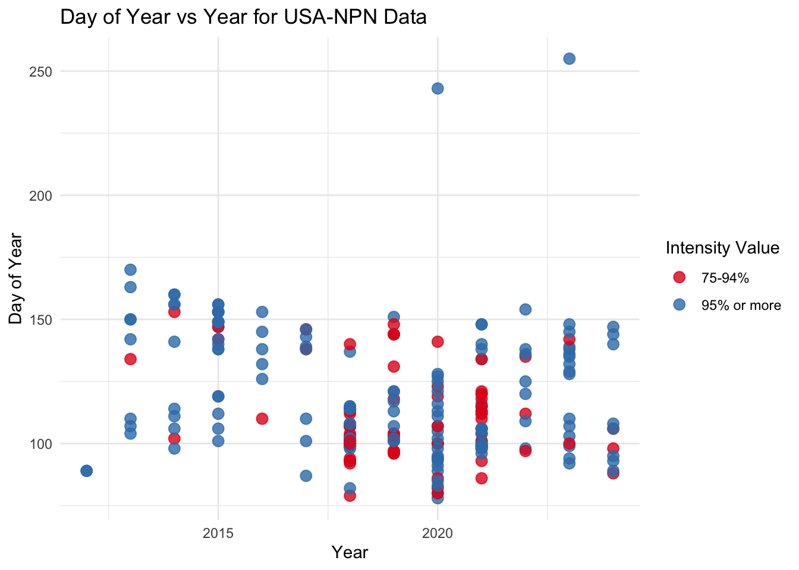
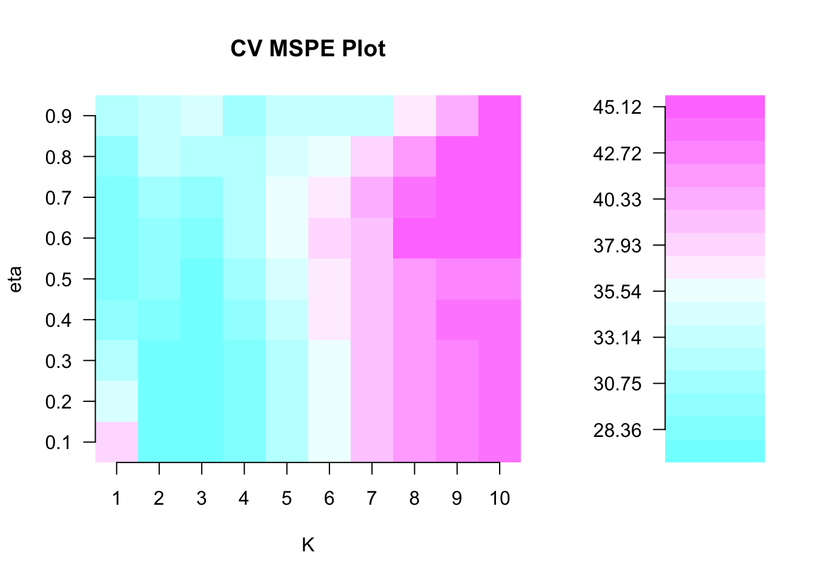
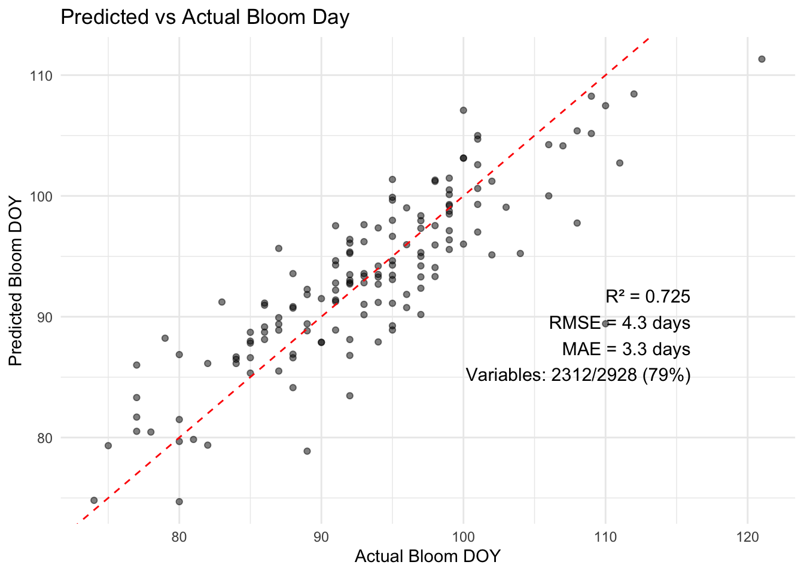
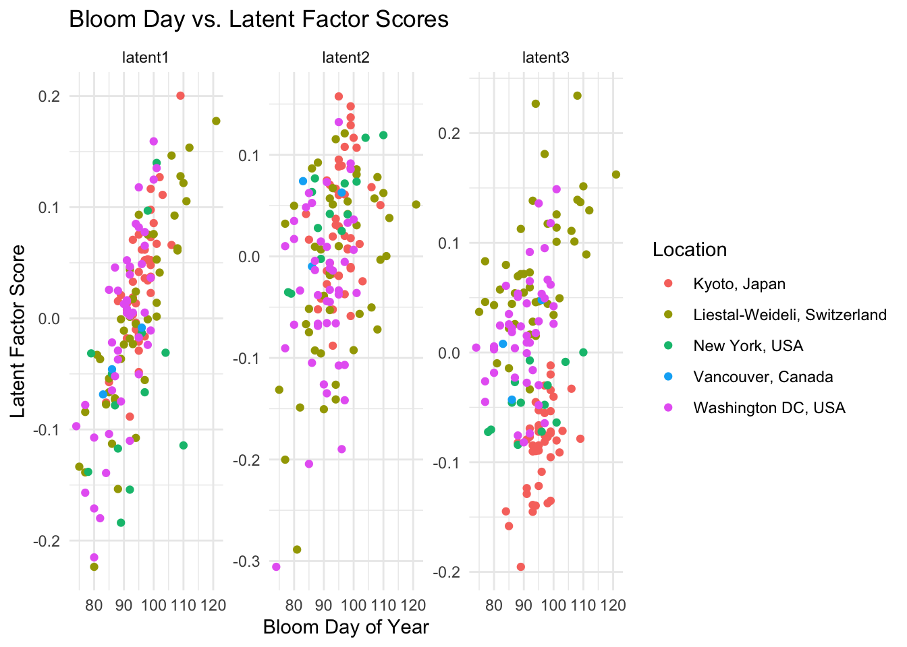
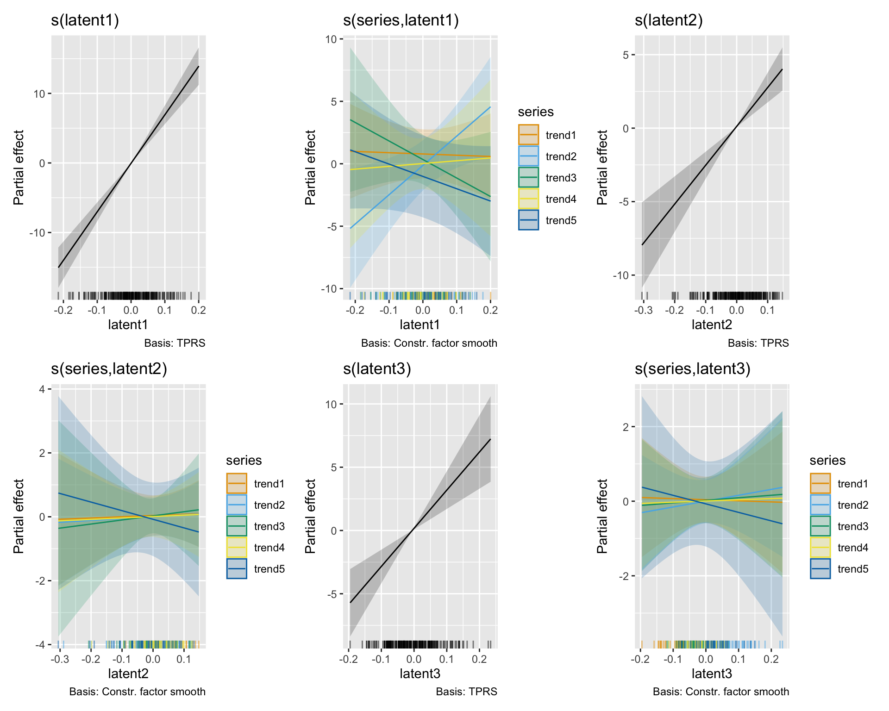
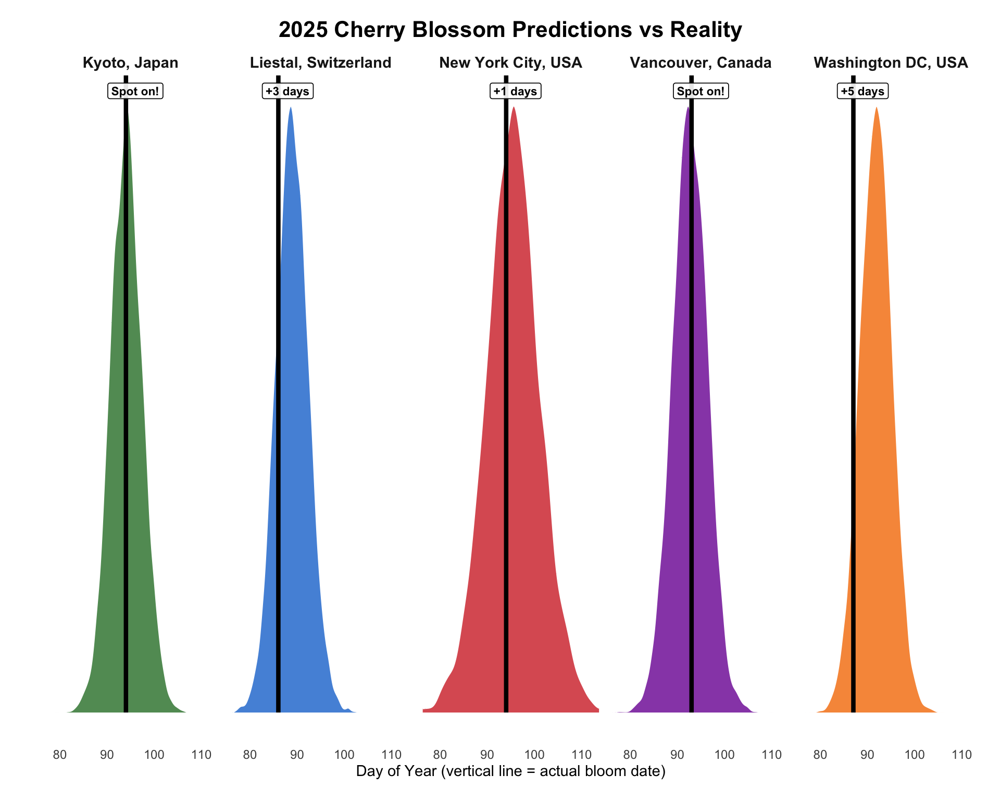

# Load all required packages
library(nasapower)
library(grateful)
library(tidyverse)
library(lubridate)
library(ggplot2)
library(data.table)
library(missForest)
library(spls)
library(stringr)
library(mvgam)
library(tibble)Cherry Blossom day prediction
So earlier this year I participated in International Cherry Blossom Prediction Competition, which invites you to predict this years bloom date of cherry trees in 5 different locations based on provided historical bloom dates provided and any data you dig out. Now that cherry trees bloomed long time ago, I am sharing my entry. As good ideas come after, I enhanced last modelling step by introducing State-space framework into GAM model, allowing to deal with observation poor
Lets load all required packages.
1. Weather Data Import
Let’s start by uploading historical weather data for studied locations. I found that NASA POWER project provides best continuous weather records using nasapower (Sparks 2018) package. Original records from nearby stations are riddled with missing data. So I download: Tmax, Tmin, Tmean and Precipitation from 1981-01-01 (earliest date available) until the most recent.
Here’s how I fetch the data for Kyoto as an example:
# Retrieve weather data using nasapower for Kyoto
Kyoto_temp <- get_power(
community = "ag",
lonlat = c(135.6761, 35.0120),
pars = c("T2M", "T2M_MAX","T2M_MIN", "PRECTOTCORR"),
dates = c("1981-01-01", "2025-02-15"),
temporal_api = "daily"
)I repeat this process for all five cherry blossom locations: Kyoto (Japan), Liestal-Weideli (Switzerland), Washington DC (USA), Vancouver (Canada), and New York City (USA).
Full code for all locations
# Retrieve weather data for remaining locations
Swiss_temp <- get_power(
community = "ag",
lonlat = c(7.730519, 47.4814),
pars = c("T2M", "T2M_MAX","T2M_MIN", "PRECTOTCORR"),
dates = c("1981-01-01", "2025-02-15"),
temporal_api = "daily"
)
Washington_temp <- get_power(
community = "ag",
lonlat = c(-77.0386, 38.8853),
pars = c("T2M", "T2M_MAX","T2M_MIN", "PRECTOTCORR"),
dates = c("1981-01-01", "2025-02-15"),
temporal_api = "daily"
)
Vancouver_temp <- get_power(
community = "ag",
lonlat = c(-123.1636, 49.2237),
pars = c("T2M", "T2M_MAX","T2M_MIN", "PRECTOTCORR"),
dates = c("1981-01-01", "2025-02-15"),
temporal_api = "daily"
)
NY_temp <- get_power(
community = "ag",
lonlat = c(-73.99809, 40.73040),
pars = c("T2M", "T2M_MAX","T2M_MIN", "PRECTOTCORR"),
dates = c("1981-01-01", "2025-02-15"),
temporal_api = "daily"
)2. Calculating Daily Weather Anomalies
Now let’s create daily anomalies. I assume that if weather conditions were identical, cherry blossoms would occur on the same day every year. By computing daily anomalies, I partially normalize our variables across different locations.
First, I define a function to calculate these anomalies:
# Function to calculate daily climate anomalies
calculate_climate_anomalies <- function(data,
baseline_start = 1981,
baseline_end = 2024,
vars = c("T2M", "T2M_MAX", "T2M_MIN", "PRECTOTCORR")) {
# Validate input variables
if (!all(vars %in% names(data))) {
stop("Not all specified variables are present in the dataset.")
}
if (!all(c("YEAR", "DOY") %in% names(data))) {
stop("Dataset must include 'YEAR' and 'DOY' columns.")
}
# Create baseline subset
baseline_data <- data[data$YEAR >= baseline_start & data$YEAR <= baseline_end, ]
# Calculate daily climatology (mean for each day-of-year)
climatology <- aggregate(baseline_data[vars],
by = list(DOY = baseline_data$DOY),
FUN = mean,
na.rm = TRUE)
# Merge climatology with original data and compute anomalies
result <- merge(data, climatology, by = "DOY", suffixes = c("", "_mean"))
for (var in vars) {
mean_col <- paste0(var, "_mean")
anom_col <- paste0(var, "_anomaly")
result[[anom_col]] <- result[[var]] - result[[mean_col]]
}
# Attach attributes and sort by date
attr(result, "baseline_period") <- paste(baseline_start, "-", baseline_end)
attr(result, "variables") <- vars
result <- result[order(result$YYYYMMDD), ]
return(result)
}I then apply this function to each location’s weather data. Here’s an example for New York:
# Calculate anomalies for New York
NY_temp_anomalies <- calculate_climate_anomalies(NY_temp)
NY_temp_anomalies$location <- "New York, USA"
Processing all locations
# Calculate anomalies for remaining locations
Vancouver_temp_anomalies <- calculate_climate_anomalies(Vancouver_temp)
Swiss_temp_anomalies <- calculate_climate_anomalies(Swiss_temp)
Washington_temp_anomalies <- calculate_climate_anomalies(Washington_temp)
Kyoto_temp_anomalies <- calculate_climate_anomalies(Kyoto_temp)
# Append location identifiers
Vancouver_temp_anomalies$location <- "Vancouver, Canada"
Swiss_temp_anomalies$location <- "Liestal-Weideli, Switzerland"
Washington_temp_anomalies$location <- "Washington DC, USA"
Kyoto_temp_anomalies$location <- "Kyoto, Japan"Finally, I combine all the anomaly data into a single dataset:
# Combine all anomaly data
combined_anomalies <- rbind(
NY_temp_anomalies,
Vancouver_temp_anomalies,
Swiss_temp_anomalies,
Washington_temp_anomalies,
Kyoto_temp_anomalies
)
combined_anomalies <- combined_anomalies[order(combined_anomalies$location, combined_anomalies$YYYYMMDD), ]3. Importing and Processing Cherry Blossom Data
Next, I import and combine the cherry blossom data. I filter for records from 1981 onward to ensure the dates match our weather data range:
# Import cherry blossom data and filter for records from 1981 onward
Vancouver <- read_csv("data/vancouver.csv",show_col_types = FALSE)
Washington <- read_csv("data/washingtondc.csv",show_col_types = FALSE)
Kyoto <- read_csv("data/kyoto.csv",show_col_types = FALSE)
Swiss <- read_csv("data/liestal.csv",show_col_types = FALSE)
Nyc <- read_csv("data/nyc.csv",show_col_types = FALSE)
combined_blossom_dates <- rbind(Vancouver, Washington, Kyoto, Swiss, Nyc)
combined_blossom_dates <- combined_blossom_dates[order(combined_blossom_dates$location, combined_blossom_dates$year), ]
combined_blossom_dates <- combined_blossom_dates[combined_blossom_dates$year >= 1981, ]4. Augmenting New York Blossom Data
The primary dataset contains only one record for New York. To augment it, I retrieve data from the USA National Phenology Network. Based on recommendations, I filter for the specific location and species, then select records with more than 74% blossom (excluding the 50–74% category, which does not match our original data). For each year, I select the earliest record:
# Read USA-NPN individual phenometrics data
USA_NPN_status_intensity <- read_csv('data/USA-NPN_status_intensity_observations_data.csv', show_col_types = FALSE)
# Convert to data frame and prepare Intensity_Value as factor
USA_status <- as.data.frame(USA_NPN_status_intensity)
USA_status$Intensity_Value <- as.factor(USA_status$Intensity_Value)
# Filter out records with intensity values that do not match our criteria
USA_status_filtered <- USA_status[!(USA_status$Intensity_Value %in%
c("-9999", "Little", "25-49%", "5-24%", "Less than 5%", "More than 10", "50-74%")), ]
# Convert dates and extract Year and Day of Year
USA_status_filtered$Date <- mdy(USA_status_filtered$Observation_Date)
USA_status_filtered$Year <- year(USA_status_filtered$Date)
USA_status_filtered$Day_of_Year <- yday(USA_status_filtered$Date)
Visualization and detailed summary
# Create a scatter plot to visualize Day of Year vs. Year, colored by Intensity_Value
ggplot(USA_status_filtered, aes(x = Year, y = Day_of_Year, color = Intensity_Value)) +
geom_point(size = 3, alpha = 0.8) +
scale_color_brewer(palette = "Set1") +
labs(title = "Day of Year vs Year for USA-NPN Data",
x = "Year",
y = "Day of Year",
color = "Intensity Value") +
theme_minimal()
# Summarize the filtered data by year
year_summary_NY_individual <- USA_status_filtered %>%
group_by(Year) %>%
summarize(
Min = min(Day_of_Year, na.rm = TRUE),
Q1 = quantile(Day_of_Year, 0.25, na.rm = TRUE),
Median = median(Day_of_Year, na.rm = TRUE),
Mean = mean(Day_of_Year, na.rm = TRUE),
Q3 = quantile(Day_of_Year, 0.75, na.rm = TRUE),
Max = max(Day_of_Year, na.rm = TRUE),
Count = n()
)
print(year_summary_NY_individual)# A tibble: 13 × 8
Year Min Q1 Median Mean Q3 Max Count
<int> <int> <dbl> <dbl> <dbl> <dbl> <int> <int>
1 2012 89 89 89 89 89 89 2
2 2013 104 110 142 137. 150 170 9
3 2014 98 108. 141 132. 156 160 11
4 2015 101 138 148 141. 153 156 24
5 2016 110 128. 135 134 143. 153 6
6 2017 87 110 138 128. 143 146 9
7 2018 79 99 101 103. 107 140 66
8 2019 96 101 106. 115. 124. 151 24
9 2020 78 90.5 100 107. 117. 243 32
10 2021 86 99 106 111. 116 148 41
11 2022 97 110. 122. 122. 136. 154 10
12 2023 92 104 130. 130. 139. 255 18
13 2024 88 94 106 110. 124 147 11Now I create augmented New York data using the earliest bloom date for each year:
# Create new NY data frame from the yearly summary (excluding 2024)
ny_data <- data.frame(
location = "newyorkcity",
lat = 40.73040,
long = -73.99809,
alt = 8.5,
year = year_summary_NY_individual$Year[year_summary_NY_individual$Year != 2024],
bloom_date = NA,
bloom_doy = year_summary_NY_individual$Min[year_summary_NY_individual$Year != 2024]
)
# Convert day-of-year to actual dates
ny_data$bloom_date <- as.Date(ny_data$bloom_doy - 1, origin = paste0(ny_data$year, "-01-01"))
# Merge with existing combined blossom dates
combined_blossom_dates <- rbind(combined_blossom_dates, ny_data)
combined_blossom_dates <- combined_blossom_dates[order(combined_blossom_dates$location, combined_blossom_dates$year), ]5. Analyzing Blossom Data
For effective modeling, I need a timeframe that aligns with the natural cherry blossom cycle rather than arbitrary calendar years. Let’s analyze our blossom date distribution to identify the optimal starting point for our “cherry year.”
# Summarize blossom dates by location
blossom_summary <- combined_blossom_dates %>%
group_by(location) %>%
summarise(
Min = min(bloom_doy),
Q1 = quantile(bloom_doy, 0.25),
Median = median(bloom_doy),
Q3 = quantile(bloom_doy, 0.75),
Max = max(bloom_doy),
Range = max(bloom_doy) - min(bloom_doy)
)
print(blossom_summary)# A tibble: 5 × 7
location Min Q1 Median Q3 Max Range
<chr> <dbl> <dbl> <dbl> <dbl> <dbl> <dbl>
1 kyoto 84 93 95 99 109 25
2 liestal 75 87 93 101 121 46
3 newyorkcity 78 87 92 98 110 32
4 vancouver 83 84.5 86 91 96 13
5 washingtondc 74 86 91 95 101 27The maximum third quartile (Q3) at day 100 represents when 75% of historical blooms have occurred in late–bloomer location—effectively marking the end of the bloom season across locations. While I could theoretically calculate predictors from one recorded bloom date to the next, this creates a circular dependency: to predict next year’s bloom date, we’d need to know it already to determine when to stop accumulating our weather predictors. By using day 100 as our universal cutoff, I establish a “cherry year” that runs from April 10 to April 9, nicely matching historical bloom cycles.
6. Building Rolling Sum Predictors
In this section, I create predictors that capture the cumulative effect of weather anomalies over a 30-day period, which Ihypothesize will influence the timing of cherry blossom.
First, Iconvert to data.table and compute 30-day rolling sums for each anomaly type. Here’s an example for temperature anomalies:
# Convert to data.table for efficient rolling calculations
combined_anomalies <- as.data.table(combined_anomalies)
# Example: Calculate 30-day rolling sums for average temperature anomalies
combined_anomalies[, temp_ave_pos_rollsum := frollsum(ifelse(T2M_anomaly > 0, T2M_anomaly, 0),
n = 30, align = "right"), by = location]
combined_anomalies[, temp_ave_neg_rollsum := frollsum(ifelse(T2M_anomaly < 0, T2M_anomaly, 0),
n = 30, align = "right"), by = location]
Complete rolling sum calculations for all variables
# Maximum temperature rolling sums
combined_anomalies[, temp_max_pos_rollsum := frollsum(ifelse(T2M_MAX_anomaly > 0, T2M_MAX_anomaly, 0),
n = 30, align = "right"), by = location]
combined_anomalies[, temp_max_neg_rollsum := frollsum(ifelse(T2M_MAX_anomaly < 0, T2M_MAX_anomaly, 0),
n = 30, align = "right"), by = location]
# Minimum temperature rolling sums
combined_anomalies[, temp_min_pos_rollsum := frollsum(ifelse(T2M_MIN_anomaly > 0, T2M_MIN_anomaly, 0),
n = 30, align = "right"), by = location]
combined_anomalies[, temp_min_neg_rollsum := frollsum(ifelse(T2M_MIN_anomaly < 0, T2M_MIN_anomaly, 0),
n = 30, align = "right"), by = location]
# Precipitation rolling sums
combined_anomalies[, prcp_pos_rollsum := frollsum(ifelse(PRECTOTCORR_anomaly > 0, PRECTOTCORR_anomaly, 0),
n = 30, align = "right"), by = location]
combined_anomalies[, prcp_neg_rollsum := frollsum(ifelse(PRECTOTCORR_anomaly < 0, PRECTOTCORR_anomaly, 0),
n = 30, align = "right"), by = location]Next, I create a “cherry year” that aligns with the bloom cycle. Based on our analysis, I start each cherry year on April 10 (day 100):
# Create a numeric day-of-year and adjust to form a 'cherry_year'
combined_anomalies[, doy := as.numeric(format(YYYYMMDD, "%j"))]
combined_anomalies[, cherry_year := ifelse(doy >= 100, year(YYYYMMDD) + 1, year(YYYYMMDD))]
combined_anomalies[, day_number := ifelse(doy >= 100, doy - 99, doy + (366 - 99))]Finally, I create a streamlined dataset containing only the rolling sum predictors:
small_anomaly_df <- combined_anomalies %>%
select(-c(DOY, LON, LAT, YEAR, MM, DD, T2M, T2M_MAX, T2M_MIN, PRECTOTCORR,
T2M_mean, T2M_MAX_mean, T2M_MIN_mean, PRECTOTCORR_mean,
T2M_anomaly, T2M_MAX_anomaly, T2M_MIN_anomaly, PRECTOTCORR_anomaly))This process creates eight rolling sum predictors (positive and negative anomalies for average/max/min temperature and precipitation) that capture the cumulative weather effects leading up to each potential bloom date.
# Load the pre-processed data since I skipped the processing steps
final_wide <- read.csv("data/final_wide.csv", row.names = 1)7. Reshaping, Imputation, and Merging Wide-Format Data
I now convert our rolling sum predictors into a wide-format structure for modeling. This creates a matrix where each row represents a cherry year and location, with columns for each day’s rolling sum values.
Here’s the process for one predictor (positive temperature anomaly rolling sum):
# Reshape data to wide format
wide_temp_ave_pos <- dcast(small_anomaly_df[!is.na(temp_ave_pos_rollsum)],
cherry_year + location ~ day_number,
value.var = "temp_ave_pos_rollsum")
# Rename columns to be more descriptive
setnames(wide_temp_ave_pos,
old = setdiff(names(wide_temp_ave_pos), c("cherry_year", "location")),
new = paste0("temp_ave_pos_rollsum_", seq_along(setdiff(names(wide_temp_ave_pos), c("cherry_year", "location")))))
# Impute missing values using random forest
numeric_cols <- setdiff(names(wide_temp_ave_pos), c("cherry_year", "location"))
numeric_matrix <- as.matrix(wide_temp_ave_pos[, ..numeric_cols])
imputed_result <- missForest(numeric_matrix, maxiter = 5, verbose = TRUE)
imputed_matrix <- imputed_result$ximp
wide_temp_ave_pos_imputed <- cbind(wide_temp_ave_pos[, .(cherry_year, location)], imputed_matrix)I repeat this process for all eight rolling sum predictors. Missing values (~2.4% per predictor) occur in three scenarios: - Initial period from April 10, 1981 to January 31, 1982 - Dates after February 20, 2025 (extent of available weather data) - Day 366 in non-leap years
Full reshaping code for all predictors
# Process negative temperature average anomalies
wide_temp_ave_neg <- dcast(small_anomaly_df[!is.na(temp_ave_neg_rollsum)],
cherry_year + location ~ day_number,
value.var = "temp_ave_neg_rollsum")
setnames(wide_temp_ave_neg,
old = setdiff(names(wide_temp_ave_neg), c("cherry_year", "location")),
new = paste0("temp_ave_neg_rollsum_", seq_along(setdiff(names(wide_temp_ave_neg), c("cherry_year", "location")))))
numeric_cols <- setdiff(names(wide_temp_ave_neg), c("cherry_year", "location"))
numeric_matrix <- as.matrix(wide_temp_ave_neg[, ..numeric_cols])
imputed_result <- missForest(numeric_matrix, maxiter = 5, verbose = TRUE)
imputed_matrix <- imputed_result$ximp
wide_temp_ave_neg_imputed <- cbind(wide_temp_ave_neg[, .(cherry_year, location)], imputed_matrix)
# Process positive temperature maximum anomalies
wide_temp_max_pos <- dcast(small_anomaly_df[!is.na(temp_max_pos_rollsum)],
cherry_year + location ~ day_number,
value.var = "temp_max_pos_rollsum")
setnames(wide_temp_max_pos,
old = setdiff(names(wide_temp_max_pos), c("cherry_year", "location")),
new = paste0("temp_max_pos_rollsum_", seq_along(setdiff(names(wide_temp_max_pos), c("cherry_year", "location")))))
numeric_cols <- setdiff(names(wide_temp_max_pos), c("cherry_year", "location"))
numeric_matrix <- as.matrix(wide_temp_max_pos[, ..numeric_cols])
imputed_result <- missForest(numeric_matrix, maxiter = 5, verbose = TRUE)
imputed_matrix <- imputed_result$ximp
wide_temp_max_pos_imputed <- cbind(wide_temp_max_pos[, .(cherry_year, location)], imputed_matrix)
# Process negative temperature maximum anomalies
wide_temp_max_neg <- dcast(small_anomaly_df[!is.na(temp_max_neg_rollsum)],
cherry_year + location ~ day_number,
value.var = "temp_max_neg_rollsum")
setnames(wide_temp_max_neg,
old = setdiff(names(wide_temp_max_neg), c("cherry_year", "location")),
new = paste0("temp_max_neg_rollsum_", seq_along(setdiff(names(wide_temp_max_neg), c("cherry_year", "location")))))
numeric_cols <- setdiff(names(wide_temp_max_neg), c("cherry_year", "location"))
numeric_matrix <- as.matrix(wide_temp_max_neg[, ..numeric_cols])
imputed_result <- missForest(numeric_matrix, maxiter = 5, verbose = TRUE)
imputed_matrix <- imputed_result$ximp
wide_temp_max_neg_imputed <- cbind(wide_temp_max_neg[, .(cherry_year, location)], imputed_matrix)
# Process positive temperature minimum anomalies
wide_temp_min_pos <- dcast(small_anomaly_df[!is.na(temp_min_pos_rollsum)],
cherry_year + location ~ day_number,
value.var = "temp_min_pos_rollsum")
setnames(wide_temp_min_pos,
old = setdiff(names(wide_temp_min_pos), c("cherry_year", "location")),
new = paste0("temp_min_pos_rollsum_", seq_along(setdiff(names(wide_temp_min_pos), c("cherry_year", "location")))))
numeric_cols <- setdiff(names(wide_temp_min_pos), c("cherry_year", "location"))
numeric_matrix <- as.matrix(wide_temp_min_pos[, ..numeric_cols])
imputed_result <- missForest(numeric_matrix, maxiter = 5, verbose = TRUE)
imputed_matrix <- imputed_result$ximp
wide_temp_min_pos_imputed <- cbind(wide_temp_min_pos[, .(cherry_year, location)], imputed_matrix)
# Process negative temperature minimum anomalies
wide_temp_min_neg <- dcast(small_anomaly_df[!is.na(temp_min_neg_rollsum)],
cherry_year + location ~ day_number,
value.var = "temp_min_neg_rollsum")
setnames(wide_temp_min_neg,
old = setdiff(names(wide_temp_min_neg), c("cherry_year", "location")),
new = paste0("temp_min_neg_rollsum_", seq_along(setdiff(names(wide_temp_min_neg), c("cherry_year", "location")))))
numeric_cols <- setdiff(names(wide_temp_min_neg), c("cherry_year", "location"))
numeric_matrix <- as.matrix(wide_temp_min_neg[, ..numeric_cols])
imputed_result <- missForest(numeric_matrix, maxiter = 5, verbose = TRUE)
imputed_matrix <- imputed_result$ximp
wide_temp_min_neg_imputed <- cbind(wide_temp_min_neg[, .(cherry_year, location)], imputed_matrix)
# Process positive precipitation anomalies
wide_prcp_pos <- dcast(small_anomaly_df[!is.na(prcp_pos_rollsum)],
cherry_year + location ~ day_number,
value.var = "prcp_pos_rollsum")
setnames(wide_prcp_pos,
old = setdiff(names(wide_prcp_pos), c("cherry_year", "location")),
new = paste0("prcp_pos_rollsum_", seq_along(setdiff(names(wide_prcp_pos), c("cherry_year", "location")))))
numeric_cols <- setdiff(names(wide_prcp_pos), c("cherry_year", "location"))
numeric_matrix <- as.matrix(wide_prcp_pos[, ..numeric_cols])
imputed_result <- missForest(numeric_matrix, maxiter = 5, verbose = TRUE)
imputed_matrix <- imputed_result$ximp
wide_prcp_pos_imputed <- cbind(wide_prcp_pos[, .(cherry_year, location)], imputed_matrix)
# Process negative precipitation anomalies
wide_prcp_neg <- dcast(small_anomaly_df[!is.na(prcp_neg_rollsum)],
cherry_year + location ~ day_number,
value.var = "prcp_neg_rollsum")
setnames(wide_prcp_neg,
old = setdiff(names(wide_prcp_neg), c("cherry_year", "location")),
new = paste0("prcp_neg_rollsum_", seq_along(setdiff(names(wide_prcp_neg), c("cherry_year", "location")))))
numeric_cols <- setdiff(names(wide_prcp_neg), c("cherry_year", "location"))
numeric_matrix <- as.matrix(wide_prcp_neg[, ..numeric_cols])
imputed_result <- missForest(numeric_matrix, maxiter = 5, verbose = TRUE)
imputed_matrix <- imputed_result$ximp
wide_prcp_neg_imputed <- cbind(wide_prcp_neg[, .(cherry_year, location)], imputed_matrix)After processing all eight predictor sets, I merge them into a comprehensive dataset:
# Merge all wide-format datasets by cherry_year and location
final_wide <- Reduce(function(x, y) merge(x, y, by = c("cherry_year", "location"), all = TRUE),
list(wide_temp_ave_pos_imputed, wide_temp_ave_neg_imputed,
wide_temp_max_pos_imputed, wide_temp_max_neg_imputed,
wide_temp_min_pos_imputed, wide_temp_min_neg_imputed,
wide_prcp_pos_imputed, wide_prcp_neg_imputed))This gives us 8 rolling sum variables × 366 days = 2,928 predictors per location per year. Due to the computational intensity of the imputation process, you can download the pre-imputed file from final_wide.csv:
write.csv(final_wide, "data/final_wide.csv", row.names = TRUE)8. Merging Rolling Sums with Blossom Data
Now I merge our wide-format predictors with the actual bloom dates:
final_wide <- as_tibble(final_wide)
# Map location names to match blossom data format
location_mapping <- c(
"Kyoto, Japan" = "kyoto",
"Liestal-Weideli, Switzerland" = "liestal",
"New York, USA" = "newyorkcity",
"Vancouver, Canada" = "vancouver",
"Washington DC, USA" = "washingtondc"
)
final_wide$location_mapped <- location_mapping[final_wide$location]
# Merge with bloom dates
final_wide <- merge(
final_wide,
combined_blossom_dates[, c("location", "year", "bloom_doy")],
by.x = c("location_mapped", "cherry_year"),
by.y = c("location", "year"),
all.x = TRUE
)
# Reorder columns to put key variables first
keep_vars <- c("cherry_year", "location", "bloom_doy")
existing_keep_vars <- keep_vars[keep_vars %in% colnames(final_wide)]
other_vars <- setdiff(names(final_wide), c(existing_keep_vars, "location_mapped"))
final_wide <- final_wide[, c(existing_keep_vars, other_vars)]9. Selecting and Engineering features for blossom date prediction using sparse Partial Least Squares
In this section, I use Sparse Partial Least Squares (SPLS) to identify key predictors and extract latent factors that summarize the high-dimensional weather data. I first convert our wide-format dataset into a matrix form and define our predictors and response (bloom day). Next, I perform 10-fold cross-validation to determine the optimal number of latent factors (K) and the sparsity level (eta). With these parameters, I fit the SPLS model to the training data, which selects a subset of predictors and computes a projection matrix. Finally, I use this projection to calculate latent factor scores (e.g., latent1, latent2, etc.) for all observations. These latent factors encapsulate the main variability in the predictors and are then used for further analysis and prediction of the bloom day. Currently I will ignore that this dataset comes from 5 different locations.
# Prepare data for SPLS
my_data <- as.data.frame(final_wide)
id_cols <- c("cherry_year", "location", "bloom_doy")
predictor_cols <- setdiff(names(my_data), id_cols)
train_data <- subset(my_data, !is.na(bloom_doy))
X_train <- as.matrix(train_data[, predictor_cols])
Y_train <- train_data$bloom_doy
# Cross-validation for optimal parameters
set.seed(123)
cv.out <- cv.spls(
X_train,
Y_train,
K = 1:10,
eta = seq(0.1, 0.9, 0.1),
fold = 10
)eta = 0.1
eta = 0.2
eta = 0.3
eta = 0.4
eta = 0.5
eta = 0.6
eta = 0.7
eta = 0.8
eta = 0.9
Optimal parameters: eta = 0.3, K = 3
optimal_K <- cv.out$K.opt
optimal_eta <- cv.out$eta.opt
# Fit final SPLS model and extract latent factors
final_model <- spls(X_train, Y_train, K = optimal_K, eta = optimal_eta)
X_all <- as.matrix(my_data[, predictor_cols])
X_all_std <- sweep(X_all, 2, final_model$meanx, FUN = "-")
X_all_std <- sweep(X_all_std, 2, final_model$normx, FUN = "/")
X_all_sub <- X_all_std[, final_model$A, drop = FALSE]
latent_all <- X_all_sub %*% final_model$projection
num_latent <- ncol(latent_all)
colnames(latent_all) <- paste0("latent", seq_len(num_latent))
latent_df <- data.frame(
cherry_year = my_data$cherry_year,
location = my_data$location,
bloom_doy = my_data$bloom_doy,
latent_all
)10. Model Diagnostics and Latent Factor Interpretation
In this section, I first assess the performance of our Sparse PLS model using training data. I compute key statistics—such as R², RMSE, and MAE—to gauge how well the model explains the variance in the bloom day (with a higher R² indicating a better fit).
# Predict on training data
y_pred_train <- predict(final_model, X_train)
SST <- sum((Y_train - mean(Y_train))^2)
SSE <- sum((Y_train - y_pred_train)^2)
R2_train <- 1 - SSE/SST
MAE_train <- mean(abs(Y_train - y_pred_train))
RMSE_train <- sqrt(mean((Y_train - y_pred_train)^2))
n_selected_vars <- length(final_model$A)
percent_vars_selected <- (n_selected_vars / length(predictor_cols)) * 100
# Create diagnostic plot with statistics
stats_text <- paste0(
"R² = ", round(R2_train, 3), "\n",
"RMSE = ", round(RMSE_train, 1), " days\n",
"MAE = ", round(MAE_train, 1), " days\n",
"Variables: ", n_selected_vars, "/", length(predictor_cols),
" (", round(percent_vars_selected, 0), "%)"
)
ggplot(data.frame(Actual = Y_train, Predicted = y_pred_train), aes(x = Actual, y = Predicted)) +
geom_point(alpha = 0.5) +
geom_abline(intercept = 0, slope = 1, color = "red", linetype = "dashed") +
annotate("text", x = max(Y_train) - 5, y = min(y_pred_train) + 10,
label = stats_text, hjust = 1, vjust = 0, size = 4,
color = "black") +
theme_minimal() +
labs(title = "Predicted vs Actual Bloom Day",
x = "Actual Bloom DOY", y = "Predicted Bloom DOY")
Not so shabby! Now lets examine the latent factors:
# Latent Factor Interpretation
# Parse the projection matrix from the SPLS model
proj_mat <- final_model$projection
# Each row name is in the form "temp_ave_pos_rollsum_123"
parsed <- str_match(rownames(proj_mat), "^(.*)_(\\d+)$")
group_names <- parsed[, 2] # e.g., "temp_ave_pos_rollsum"
day_indices <- as.numeric(parsed[, 3]) # day number
# Create a data frame of loadings with associated group and day
df_proj <- as.data.frame(proj_mat)
df_proj$group <- group_names
df_proj$day <- day_indices
# Rename factor columns for clarity
n_fac <- ncol(proj_mat)
colnames(df_proj)[1:n_fac] <- paste0("Factor", seq_len(n_fac))
# Pivot the data to long format: each row becomes (group, day, factor, loading)
df_long <- pivot_longer(df_proj,
cols = starts_with("Factor"),
names_to = "factor",
values_to = "loading")
# Build a complete grid for all groups, days (1:366), and factors
all_groups <- c("temp_ave_pos_rollsum", "temp_ave_neg_rollsum",
"temp_max_pos_rollsum", "temp_max_neg_rollsum",
"temp_min_pos_rollsum", "temp_min_neg_rollsum",
"prcp_pos_rollsum", "prcp_neg_rollsum")
all_factors <- unique(df_long$factor)
grid_df <- expand.grid(group = all_groups, day = 1:366, factor = all_factors,
stringsAsFactors = FALSE)
# Merge grid with loadings to include missing combinations as NA
df_plot <- left_join(grid_df, df_long, by = c("group", "day", "factor"))
# Convert day index to a date for plotting; day 1 corresponds to April 10
base_date <- as.Date("2020-04-10")
df_plot$date <- base_date + (df_plot$day - 1)
# Extract variable type and anomaly direction from group name
df_plot <- df_plot %>%
mutate(
type = gsub("_pos_rollsum.*|_neg_rollsum.*", "", group),
anomaly = ifelse(grepl("_pos_", group), "pos", "neg")
) %>%
mutate(type = factor(type, levels = c("temp_min", "temp_ave", "temp_max", "prcp")),
anomaly = factor(anomaly, levels = c("pos", "neg")))
# Heatmap of latent factor loadings
p_heatmap <- ggplot(df_plot, aes(x = date, y = anomaly, fill = loading)) +
geom_tile() +
facet_grid(type ~ factor) +
scale_x_date(date_breaks = "2 months", date_labels = "%b") + # Show every 2nd month
scale_fill_gradient2(low = "blue", mid = "white", high = "red", midpoint = 0,
na.value = "grey90",
labels = scales::label_number(accuracy = 0.0001)) +
labs(title = "Heatmap of SPLS Loadings by Factor and Variable Type",
x = "Months", y = "Anomaly (pos vs neg)", fill = "Loading") +
theme_minimal()These factors summarize the original rolling sum predictors, showing clear patterns. Negative temperature anomalies accumulated before the median bloom date load negatively; since these sums are negative, a larger accumulation of cold days actually delays blooming. In contrast, higher rolling sums of positive temperature anomalies—indicating warmer days—load negatively, which means that more warm days speed up the bloom. Additionally, the model captures a dormancy effect: a buildup of cold days in October and November tends to lead to an earlier bloom the following year. Similarly, lower-than-average precipitation starting in December is associated with earlier blooming. This interpretation confirms that the latent factors meaningfully reflect the influence of weather on cherry blossom timing.
Now let’s examine how these latent factors cluster by location. Although our SPLS model was built on the combined dataset—ignoring that measurements come from five different sites with potentially different responses—I can still see some separation. For instance, the third latent factor reveals that different sites tend to occupy distinct regions in the factor space. This variability indicates that site-specific responses exist, which is why I ultimately use a generalized additive model (GAM) to flexibly capture these differences in our final analysis.
# 1) Reshape data so each latent factor is in its own row
latent_long <- latent_df %>%
pivot_longer(
cols = starts_with("latent"), # or c("latent1", "latent2", "latent3")
names_to = "factor",
values_to = "score"
)
# 2) Create the scatter plot, facet by factor
p <- ggplot(latent_long, aes(x = bloom_doy, y = score, color = location)) +
# Use na.rm=TRUE so rows with NA in bloom_doy or score are simply not plotted
geom_point(na.rm = TRUE) +
# Optional: add a smoothing trend line for each location
# geom_smooth(method = "lm", se = FALSE, na.rm = TRUE)
facet_wrap(~ factor, scales = "free_y") +
labs(
title = "Bloom Day vs. Latent Factor Scores",
x = "Bloom Day of Year",
y = "Latent Factor Score",
color = "Location"
) +
theme_minimal()
print(p)
Although our SPLS model was built on the combined dataset—ignoring that measurements come from five different sites with potentially different responses—I can still see some separation. For instance, the third latent factor reveals that different sites tend to occupy distinct regions in the factor space. This variability indicates that site-specific responses exist, which is why I ultimately use a generalized additive model (GAM) to flexibly capture these differences in our final analysis.
11. Dynamic GAM Modeling for Forecasting
Dynamic GAM Modeling for Location-Specific Latent Factor Adaptation
I now have three powerful latent factors from our SPLS analysis that capture the main weather patterns driving cherry blossom variability. However, these factors were derived as linear predictors from data pooled across all five locations, assuming each site responds identically to the same weather patterns.
The problem: Real cherry trees don’t follow universal rules. Each location likely has its own unique sensitivity to weather - Kyoto’s cherry blossoms might respond differently to warming than Vancouver’s, and some locations have frustratingly sparse observations that make traditional modeling challenging.
The approach: So I decided to go with mvgam (Clark and Wells 2023). mvgam stands for MultiVariate (Dynamic) Generalized Additive Models and is specifically designed for time series analysis like ours:
Time series focus: Specifically designed for time series prediction with built-in capabilities to model autocorrelation if needed.
GAM flexibility: At its core, it’s still a GAM, making it ideal for bending our otherwise linear latent factors to each location individually.
State-space robustness: The state-space modeling framework is perfect for time series with missing observations. It models the underlying bloom process separately from the observations, so our sparse New York and Vancouver data doesn’t break the model—missing data areas handled by modeling the latent bloom process as it evolves through time.
Bayesian uncertainty: The Bayesian framework provides natural uncertainty quantification for both parameters and predictions.
Data preparation and model setup
First, I split my data into training and testing sets at 2024 to ensure at least one bloom date for each location in our forecast evaluation. For state-space modeling, I need both series (to identify different time series) and trend (for the process formula) variables.
My model structure uses shrinkage smooths (bs="sz") to handle the location-specific responses. For example, s(latent1, k=3) creates the main smooth effect of latent1, while s(trend, latent1, bs="sz", k=3) adds location-specific deviations. The “sz” basis applies shrinkage - locations with sparse data have their specific effects shrunk toward zero, essentially borrowing the response pattern from data-rich locations. Meanwhile, Kyoto and others with complete records can maintain their unique response curves.
Let’s prepare the data and fit the model:
df <- latent_df
df$location <- as.factor(df$location)
df$series <- df$location # Keep series for identifying time series
df$trend <- df$location # Add trend for trend_formula
df$time <- df$cherry_year - 1981 #For numerical stability
# Split data into training (<2024) and testing (>=2024)
train_mvgam <- df[df$cherry_year < 2024, ]
test_mvgam <- df[df$cherry_year >= 2024, ]
# Now fit with tweaked priors
model_gaussian <- mvgam(formula = bloom_doy ~ series,
trend_formula = ~ s(latent1, k=3) + s(trend, latent1, bs="sz",k=3) +
s(latent2, k=3) + s(trend, latent2, bs="sz",k=3) +
s(latent3, k=3) + s(trend, latent3, bs="sz",k=3),
data = train_mvgam,
newdata = test_mvgam,
noncentred = TRUE,
family = gaussian(),silent = 2)Let’s examine the model diagnostics:
summary(model_gaussian, include_betas = FALSE)GAM observation formula:
bloom_doy ~ series
GAM process formula:
~s(latent1, k = 3) + s(trend, latent1, bs = "sz", k = 3) + s(latent2,
k = 3) + s(trend, latent2, bs = "sz", k = 3) + s(latent3,
k = 3) + s(trend, latent3, bs = "sz", k = 3)
Family:
gaussian
Link function:
identity
Trend model:
None
N process models:
5
N series:
5
N timepoints:
45
Status:
Fitted using Stan
4 chains, each with iter = 1000; warmup = 500; thin = 1
Total post-warmup draws = 2000
Observation error parameter estimates:
2.5% 50% 97.5% Rhat n_eff
sigma_obs[1] 0.91 2.30 3.0 1.05 61
sigma_obs[2] 2.30 3.50 4.7 1.01 350
sigma_obs[3] 5.70 8.30 14.0 1.00 1538
sigma_obs[4] 0.15 0.95 5.7 1.01 591
sigma_obs[5] 1.10 3.40 4.4 1.09 45
GAM observation model coefficient (beta) estimates:
2.5% 50% 97.5% Rhat n_eff
(Intercept) 88.0 94.00 99.0 1 1148
seriesLiestal-Weideli, Switzerland -4.8 -1.70 1.1 1 956
seriesNew York, USA -2.6 0.81 4.9 1 1569
seriesVancouver, Canada -4.4 -1.40 1.7 1 844
seriesWashington DC, USA -5.5 -1.70 2.0 1 1339
Process error parameter estimates:
2.5% 50% 97.5% Rhat n_eff
sigma[1] 0.0160 0.38 2.1 1.05 71
sigma[2] 0.0180 0.41 2.4 1.01 292
sigma[3] 0.0092 0.34 2.0 1.00 2775
sigma[4] 0.0160 0.48 2.1 1.00 1250
sigma[5] 0.0140 0.43 3.2 1.11 40
GAM process model coefficient (beta) estimates:
2.5% 50% 97.5% Rhat n_eff
(Intercept)_trend -5.1 0.076 5.5 1 1396
Approximate significance of GAM process smooths:
edf Ref.df Chi.sq p-value
s(latent1) 1.01 2 4706.30 < 2e-16 ***
s(series,latent1) 7.61 12 128.89 0.36
s(latent2) 1.02 2 638.76 < 2e-16 ***
s(series,latent2) 3.31 12 1.97 1.00
s(latent3) 1.01 2 291.30 1.7e-05 ***
s(series,latent3) 1.59 12 1.37 1.00
---
Signif. codes: 0 '***' 0.001 '**' 0.01 '*' 0.05 '.' 0.1 ' ' 1
Stan MCMC diagnostics:
✔ No issues with effective samples per iteration
✖ Rhats above 1.05 found for some parameters
Use pairs() and mcmc_plot() to investigate
✖ 105 of 2000 iterations ended with a divergence (5.25%)
Try a larger adapt_delta to remove divergences
✔ No issues with maximum tree depth
Samples were drawn using sampling(hmc). For each parameter, n_eff is a
crude measure of effective sample size, and Rhat is the potential scale
reduction factor on split MCMC chains (at convergence, Rhat = 1)
Use how_to_cite() to get started describing this modelThe model shows severe convergence issues. Several variance parameters (sigmas) from both the observation and process models are poorly identified, with terrible effective sample sizes and Rhat values. Let me unpack what’s happening here. In our state-space formulation:
The baseline: Without weather effects, each location would bloom on roughly the same day every year (captured by the location intercepts) The process model: Our SPLS-derived latent factors predict deviations from this baseline. The process error represents additional year-to-year variation not captured by weather - perhaps soil conditions, tree age, or other unmeasured factors The observation model: This is where bloom dates actually get recorded. The observation error represents how much our weather-based predictions miss the true bloom dates
The identifiability crisis occurs because the model can explain the same bloom variability in multiple ways. High process error + low observation error? Low process error + high observation error? Without constraints, the model can’t decide. Here’s the key insight: Our SPLS model achieved good R² and MAE when fitted on pooled data from all locations. This means it captures the “average” weather-bloom relationship well, but likely misses location-specific nuances by roughly the same amount everywhere. The observation error is essentially quantifying “how wrong is our one-size-fits-all weather model?” By setting share_obs_params = TRUE, I enforce this logic: all locations share the same observation variance because they all use the same pooled SPLS model. This constraint breaks the identifiability problem while still allowing location-specific process errors to capture unique temporal patterns. Additionally, with 19% of iterations ending in divergences, I’ll increase adapt_delta to 0.99, max_treedepth to 12, and number of iterations for more careful exploration of the posterior:
model_shared_sz <- mvgam(formula = bloom_doy ~ series,
trend_formula = ~ s(latent1, k=3) + s(trend, latent1, bs="sz",k=3) +
s(latent2, k=3) + s(trend, latent2, bs="sz",k=3) +
s(latent3, k=3) + s(trend, latent3, bs="sz",k=3),
data = train_mvgam,
newdata = test_mvgam,
share_obs_params = TRUE,
noncentred = TRUE,
control = list(adapt_delta = 0.99, max_treedepth = 12),
burnin = 500,
samples = 2000,
family = gaussian(),silent = 2)
summary(model_shared_sz, include_betas = FALSE)GAM observation formula:
bloom_doy ~ series
GAM process formula:
~s(latent1, k = 3) + s(trend, latent1, bs = "sz", k = 3) + s(latent2,
k = 3) + s(trend, latent2, bs = "sz", k = 3) + s(latent3,
k = 3) + s(trend, latent3, bs = "sz", k = 3)
Family:
gaussian
Link function:
identity
Trend model:
None
N process models:
5
N series:
5
N timepoints:
45
Status:
Fitted using Stan
4 chains, each with iter = 2500; warmup = 500; thin = 1
Total post-warmup draws = 8000
Observation error parameter estimates:
2.5% 50% 97.5% Rhat n_eff
sigma_obs 2.7 3.2 3.8 1 846
GAM observation model coefficient (beta) estimates:
2.5% 50% 97.5% Rhat n_eff
(Intercept) 88.0 94.00 99.0 1 2749
seriesLiestal-Weideli, Switzerland -5.1 -1.60 1.5 1 3642
seriesNew York, USA -2.5 0.74 4.3 1 3997
seriesVancouver, Canada -4.8 -0.90 2.5 1 6999
seriesWashington DC, USA -5.8 -1.30 2.7 1 3233
Process error parameter estimates:
2.5% 50% 97.5% Rhat n_eff
sigma[1] 0.0098 0.25 1.1 1 7133
sigma[2] 0.0170 0.43 2.1 1 1938
sigma[3] 0.5900 4.40 6.7 1 424
sigma[4] 0.0120 0.34 1.8 1 12251
sigma[5] 0.0130 0.41 2.0 1 2242
GAM process model coefficient (beta) estimates:
2.5% 50% 97.5% Rhat n_eff
(Intercept)_trend -5.4 0.045 5.2 1 3020
Approximate significance of GAM process smooths:
edf Ref.df Chi.sq p-value
s(latent1) 1.009 2 4027.93 < 2e-16 ***
s(series,latent1) 7.792 12 233.66 0.12
s(latent2) 1.082 2 635.27 < 2e-16 ***
s(series,latent2) 3.099 12 2.42 1.00
s(latent3) 0.999 2 296.04 3.4e-05 ***
s(series,latent3) 2.233 12 1.09 1.00
---
Signif. codes: 0 '***' 0.001 '**' 0.01 '*' 0.05 '.' 0.1 ' ' 1
Stan MCMC diagnostics:
✔ No issues with effective samples per iteration
✔ Rhat looks good for all parameters
✔ No issues with divergences
✔ No issues with maximum tree depth
Samples were drawn using sampling(hmc). For each parameter, n_eff is a
crude measure of effective sample size, and Rhat is the potential scale
reduction factor on split MCMC chains (at convergence, Rhat = 1)
Use how_to_cite() to get started describing this modelgratia::draw(model_shared_sz, trend_effects=TRUE)
The enhanced sampling and shared observation parameters completely fixed our convergence issues. All parameters now have excellent effective sample sizes and Rhat values of 1.00. The shared observation error settled at about 3.2 days (pretty much as MAE of joint SPLS model) - this represents how much our weather-based predictions typically miss the actual bloom dates. Looking at the smooth effects, the main patterns are beautifully linear, exactly as expected from our SPLS-derived factors. Each latent factor shows a strong linear relationship with bloom timing (all p < 0.001). The location-specific deviations (s(series,latent) terms) aren’t statistically significant, which isn’t surprising given our limited data. However, they still capture subtle location-specific responses that contribute to more accurate predictions.
So lets now run predictions for 2025 and compare with real data.
# Forecast
fc <- forecast(model_shared_sz, test_mvgam)
# Map full location names to short names for predictions
location_mapping <- c(
"Kyoto, Japan" = "kyoto",
"Liestal-Weideli, Switzerland" = "liestal",
"New York, USA" = "newyorkcity",
"Vancouver, Canada" = "vancouver",
"Washington DC, USA" = "washingtondc"
)
# Create dataframe with actual 2025 bloom dates
actual_2025 <- data.frame(
location = c("liestal", "vancouver", "kyoto", "washingtondc", "newyorkcity"),
actual_date = as.Date(c("2025-03-27", "2025-04-03", "2025-04-04", "2025-03-28", "2025-04-04")),
actual_doy = c(86, 93, 94, 87, 94),
stringsAsFactors = FALSE
)
# Extract posterior draws for all locations
posterior_draws <- list()
for (i in seq_along(fc$series_names)) {
full_name <- as.character(fc$series_names[i])
short_name <- location_mapping[full_name]
posterior_draws[[short_name]] <- fc$forecasts[[i]][, 2] # 2025 predictions
}
# Convert to long format for plotting
draws_df <- data.frame(
value = unlist(posterior_draws),
location = rep(names(posterior_draws), each = length(posterior_draws[[1]]))
)
# Add actual values
draws_df <- merge(draws_df, actual_2025[, c("location", "actual_doy")], by = "location", all.x = TRUE)
# Add proper location names
draws_df$location_full <- factor(draws_df$location,
levels = c("kyoto", "liestal", "newyorkcity", "vancouver", "washingtondc"),
labels = c("Kyoto, Japan",
"Liestal, Switzerland",
"New York City, USA",
"Vancouver, Canada",
"Washington DC, USA"))
# Calculate summary statistics with rounded differences
summary_stats <- draws_df %>%
group_by(location_full, actual_doy) %>%
summarise(
median_pred = median(value),
mean_pred = mean(value),
.groups = 'drop'
) %>%
mutate(
diff = round(median_pred - actual_doy, 0),
diff_text = case_when(
diff > 0 ~ paste0("+", diff, " days"),
diff < 0 ~ paste0(diff, " days"),
TRUE ~ "Perfect!"
)
)
# Create the plot
p_presentation <- ggplot() +
# Density plots
geom_density(data = draws_df,
aes(x = value, fill = location_full),
alpha = 0.8,
color = "white",
linewidth = 0.5) +
# Actual date lines
geom_segment(data = summary_stats,
aes(x = actual_doy, xend = actual_doy, y = 0, yend = Inf),
color = "black",
linewidth = 1.5,
linetype = "solid") +
# Error labels
geom_label(data = summary_stats,
aes(x = actual_doy + 2, y = Inf,
label = ifelse(diff == 0, "Spot on!", diff_text)),
vjust = 1.5,
size = 3,
fontface = "bold",
fill = "white",
alpha = 0.9,
label.padding = unit(0.25, "lines"),
label.size = 0.3) +
facet_wrap(~ location_full, scales = "free_y", nrow = 1) +
scale_fill_manual(values = c("#2E7D32", "#1976D2", "#D32F2F", "#7B1FA2", "#F57C00")) +
coord_cartesian(xlim = c(78, 112)) + # This prevents cutting off distributions
scale_x_continuous(breaks = seq(80, 110, by = 10)) +
labs(title = "2025 Cherry Blossom Predictions vs Reality",
x = "Day of Year (vertical line = actual bloom date)",
y = "") +
theme_minimal() +
theme(
legend.position = "none",
plot.title = element_text(size = 16, face = "bold", hjust = 0.5),
strip.text = element_text(size = 11, face = "bold"),
axis.text.y = element_blank(),
axis.text.x = element_text(size = 9),
panel.grid = element_blank(),
panel.spacing = unit(0.5, "lines"),
plot.margin = margin(15, 15, 15, 15)
)
# Display the plot
print(p_presentation)
Two perfect predictions (Kyoto and Vancouver), and the rest within a week - not bad for a model predicting a complex biological phenomenon months in advance. What started as a challenge to predict cherry blossoms using weather anomalies has demonstrated the power of combining dimensional reduction (SPLS) with flexible modeling (mvgam). The approach successfully handled the twin challenges of high-dimensional weather data and sparse observations, delivering predictions with well-calibrated uncertainty. Most satisfying is that the locations with the least data (New York and Vancouver) performed just as well as data-rich sites - proof that our shrinkage approach effectively borrowed strength across locations. Cherry trees may not follow universal rules, but with the right modeling framework, I can still capture their unique responses to weather patterns
We used R version 4.5.1 (R Core Team 2025) and the following R packages: data.table v. 1.17.6 (Barrett et al. 2025), gratia v. 0.10.0 (Simpson 2024), missForest v. 1.5 (Stekhoven and Buehlmann 2012; Stekhoven 2022), mvgam v. 1.1.51 (Clark and Wells 2023), nasapower v. 4.2.5 (Sparks 2018), rmarkdown v. 2.29 (Xie, Allaire, and Grolemund 2018; Xie, Dervieux, and Riederer 2020; Allaire et al. 2024), scales v. 1.4.0 (Wickham, Pedersen, and Seidel 2025), spls v. 2.2.3 (Chung, Chun, and Keles 2019), tidyverse v. 2.0.0 (Wickham et al. 2019).
References
Allaire, JJ, Yihui Xie, Christophe Dervieux, Jonathan McPherson, Javier Luraschi, Kevin Ushey, Aron Atkins, et al. 2024. rmarkdown: Dynamic Documents for r. https://github.com/rstudio/rmarkdown.
Barrett, Tyson, Matt Dowle, Arun Srinivasan, Jan Gorecki, Michael Chirico, Toby Hocking, Benjamin Schwendinger, and Ivan Krylov. 2025. data.table: Extension of “data.frame”. https://doi.org/10.32614/CRAN.package.data.table.
Chung, Dongjun, Hyonho Chun, and Sunduz Keles. 2019. spls: Sparse Partial Least Squares (SPLS) Regression and Classification. https://doi.org/10.32614/CRAN.package.spls.
Clark, Nicholas J, and Konstans Wells. 2023. “Dynamic Generalized Additive Models (DGAMs) for Forecasting Discrete Ecological Time Series.” Methods in Ecology and Evolution 14: 771–84. https://doi.org/10.18637/jss.v100.i05.
R Core Team. 2025. R: A Language and Environment for Statistical Computing. Vienna, Austria: R Foundation for Statistical Computing. https://www.R-project.org/.
Simpson, Gavin L. 2024. gratia: Graceful ggplot-Based Graphics and Other Functions for GAMs Fitted Using mgcv. https://gavinsimpson.github.io/gratia/.
Sparks, Adam H. 2018. “nasapower: A NASA POWER Global Meteorology, Surface Solar Energy and Climatology Data Client for r.” The Journal of Open Source Software 3 (30): 1035. https://doi.org/10.21105/joss.01035.
Stekhoven, Daniel J. 2022. missForest: Nonparametric Missing Value Imputation Using Random Forest.
Stekhoven, Daniel J., and Peter Buehlmann. 2012. “MissForest - Non-Parametric Missing Value Imputation for Mixed-Type Data.” Bioinformatics 28 (1): 112–18.
Wickham, Hadley, Mara Averick, Jennifer Bryan, Winston Chang, Lucy D’Agostino McGowan, Romain François, Garrett Grolemund, et al. 2019. “Welcome to the tidyverse.” Journal of Open Source Software 4 (43): 1686. https://doi.org/10.21105/joss.01686.
Wickham, Hadley, Thomas Lin Pedersen, and Dana Seidel. 2025. scales: Scale Functions for Visualization. https://doi.org/10.32614/CRAN.package.scales.
Xie, Yihui, J. J. Allaire, and Garrett Grolemund. 2018. R Markdown: The Definitive Guide. Boca Raton, Florida: Chapman; Hall/CRC. https://bookdown.org/yihui/rmarkdown.
Xie, Yihui, Christophe Dervieux, and Emily Riederer. 2020. R Markdown Cookbook. Boca Raton, Florida: Chapman; Hall/CRC. https://bookdown.org/yihui/rmarkdown-cookbook.